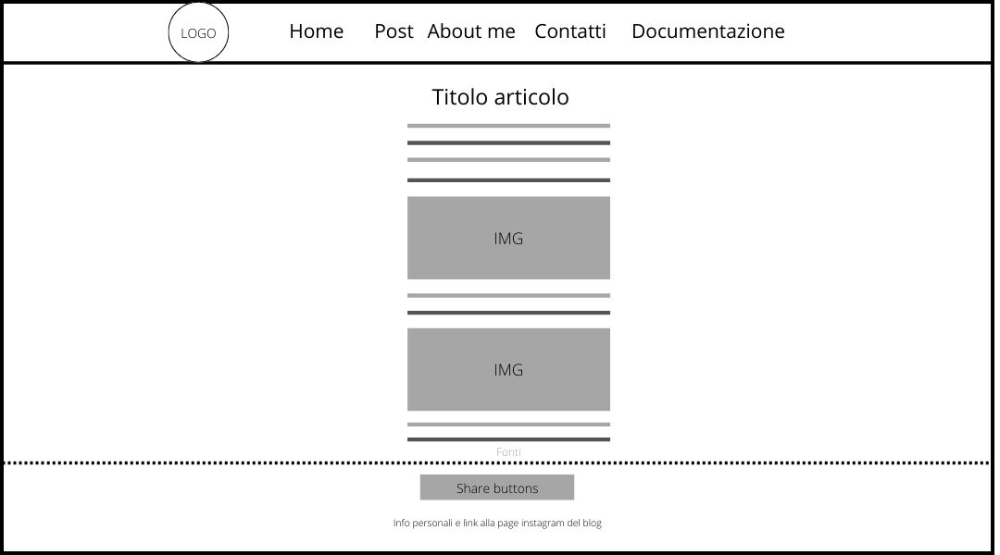

Abstract
WarMusic è un blog che approfondisce il nostro passato utilizzando la musica. Esso vuole svolgere questa funzione come una sorta di “contenitore”, essendo che le informazioni sul tema sono frastagliate e sparse lungo tutto il web. Il sito è rivolto ad appassionati storici i quali vogliono ampliare le loro conoscenze attraverso un campo, quello musicale, che magari non avevano preso in considerazione. Data la natura narrativa del progetto, il target utente non ha un limite di età, serve solo la passione per la materia.
Project Management Plan
Benchmarking
Obiettivi
L’obiettivo del sito è quello di analizzare la storia attraverso l’espediente musicale, come già affermato anche nella homepage. Tutto questo nella speranza di aumentare il bagaglio culturale dei lettori.
Target
Il target primario di WarMusic sono tutti gli appassionati di storia, indipendentemente dal fatto che essi siano studenti universitari o adulti interessati al tema. Ovviamente, la platea può essere ampliata anche a chi semplicemente abbia voglia di imparare qualcosa di nuovo.
Competitors
Come già accennato nell’abstract, sul web mancano luoghi specifici sul tema, rendendo le informazioni difficili da reperire. In virtù di ciò la definizione dei competitors è risultata complessa. In ogni caso, ne ho individuati 2:
• Il primo è Blog della Musica, il nome è abbastanza esplicativo dei suoi contenuti. Difatti, il blog tratta appunto di musica in numerose sfaccettature. È sicuramente un sito ampio e approfondito, che spazia dalla pubblicazione di articoli alla sponsorizzazione di vari artisti e album. Tra i vari post, ne troviamo anche qualcuno che fa riferimento alla storia; tuttavia, in quel caso, si tratta principalmente di storia della musica in sé, andando quindi in senso opposto a WarMusic, il quale utilizza la musica per parlare di storia. In più, data la mole di articoli, quelli più propriamente storiografici richiedono una ricerca aggiuntiva da parte dell’utente, cosa che invece in questo blog non è necessaria.
• Il secondo invece è Pillole di Storia, blog che tratta appunto principalmente di storia. Esso è discretamente schematico nel suo essere, dando l’idea di avere “tutte le sezioni che servono” divise in maniera più o meno intuibile. Tuttavia, stona sicuramente la presenza di un doppio menù di navigazione separato dal banner contenente il logo. Come blog è molto incentrato su eventi storici in sé e prova a trattare quelli in grado più facilmente di creare interesse nel pubblico. Anche qui vale lo stesso discorso di prima, gli articoli legati al ruolo della musica nella storia sono pochi e necessitano una ricerca apposita. Inoltre, all’interno della sezione” Cinema-Tv-Spettacolo” (ma anche per alcuni articoli in home) sembra che ci sia una perdita di vista rispetto al focus principale che dovrebbe avere il blog.
Struttura e layout
Architettura del sito

Wireframe
1) Homepage
2) Post

3) Articolo
4) About me
5) Contatti
Look and Feel
Per la titolazione ho scelto il font “Reem Kufi Fun” abbinato al colore ‘#9A4A4A’. È una tonalità che salta subito all’occhio dati gli sfondi bianchi del blog. Tuttavia, al contempo è come se fosse “spenta” e non eccessivamente sgargiante. Ho agito in questo modo, oltre che per leggibilità, per provare a veicolare il messaggio di “passato” che comunque è ancora ben visibile.
Per il corpo del testo ho scelto invece il font “Frank Ruhl Libre” abbinato al colore ‘#54565d’. Tonalità di grigio molto vicino al nero, ho optato per essa per lo stesso motivo detto sopra. In più, l’abbinamento con la colorazione del titolo non risulta sgradevole.
Il sito è organizzato semplicemente inserendo tutto ciò che un utente si aspetta all’interno di un blog comune. Il menu è orizzontale e posizionato in alto alla pagina, con un colore aggiuntivo per evidenziare la pagina attuale: in questo modo si aiuta l’utente ad orientarsi. Inoltre, la navigazione è semplificata dai molteplici modi con cui raggiungere la home: cliccando la voce “Home” sul menu, cliccando il logo del blog oppure cliccando il link alla home alla fine di ogni articolo.
Linguaggi e strumenti
Linguaggi utilizzati: HTML e CSS
Strumenti utilizzati:
• W3School per delucidazioni su grafica, html e uso di bootstrap
• Bootstrap per la grafica e le sue preziose librerie (con cui ho fatto navbar e cads). Fondamentale il suo supporto in termini di responsiveness del sito
• Github per la pubblicazione del sito
• Google Fonts per i font
• Adobe Color per la scelta dei colori
• Font Awesome per le icone
• Iconscout per immagine Instagram nella card. Credits to: Daniel Bruce
• AddToAny per gli Share Buttons
• Gimp per la creazione del logo e gli eventuali ridimensionamenti delle immagini
• Canva per gli schemi della documentazione
• Flickr e Google immagini per le foto
• Stack Overflow e Youtube per risoluzione di problemi specifici
• Instagram, Telegram e Whatsapp per la condivisione del sito
Communication Strategy
Background
Avendo analizzando i competitors, si denota una mancanza di blog specifici sul tema. Difatti, contenuti simili compaiono in blog vertenti su altro, e richiedono una ricerca specifica. In questo modo, un eventuale utente interessato all’argomento si troverà ad ampliare la sua ricerca a vari siti web diversi tra di loro.
Obiettivi comunicativi
WarMusic nasce quindi nell’ottica di offrire uno spazio chiaro ed unico di approfondimento delle tematiche storiche legate alla musica. Così facendo, all’utente non sarà richiesto di spulciare vari siti e potrà trovare le informazioni richieste in un luogo web definito.
Target audience e messaggio
Il target primario sono gli appassionati di storia in generale, indipendentemente dalla loro età ed altri interessi. Target secondario sono tutte le persone curiose che vogliono aumentare il loro bagaglio culturale. Il mezzo ottimale per la diffusione del blog sono sicuramente i social media.
Il sito vuole essenzialmente diffondere cultura in un modo semplice. Ecco perché ho deciso di usare un registro chiaro e lineare, in questo modo è garantita una fruibilità ottimale indipendentemente dal livello di istruzione del lettore.